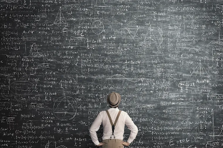

Lógica Matemática
(imagem ilustrativa da menor simplificação de uma expressão de 9 variáveis)
Usando bases da matemática booleana, sei bastante sobre resolução de problemas utilizando ferramentas lógicas. A base do conteudo aprendido é as conclusoes matematicas que chegam em verdadeiro ou falso. Sejam as hipoteses consideradas verdadeiras ou nao, reduzir as expressoes ou chegar em conclusões expecíficas foi um aprendizado necessario para compreender a matéria.